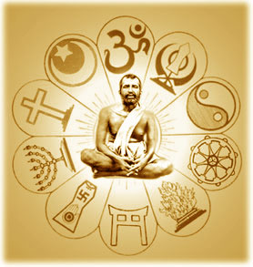
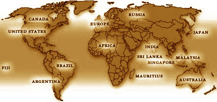

Ramakrishna Math and Ramakrishna Mission are worldwide, non-political, non-sectarian spiritual organizations which have been engaged in various forms of humanitarian, social service activities for more than a century.
Inspired by the ideals of renunciation and service, the monks and lay devotees of the Math and Mission serve millions of men, women and children, without any distinction of caste, religion or race, because they see the living God in them.
The organizations were brought into existence by Sri Ramakrishna (1836-1886), the great 19th century saint from Bengal who is regarded as the Prophet of the Modern Age, and Sri Ramakrishna's chief disciple, Swami Vivekananda (1863-1902), one of the foremost thinkers and religious leaders of the present age, who is regarded as 'one of the main moulders of the modern world', in the words of an eminent Western scholar A.L. Basham.
Although Ramakrishna Math and Ramakrishna Mission are legally and financially separate, they are closely inter-related in several ways and are regarded as twin organizations.
These twin organizations have set in motion a non-sectarian, universal spiritual movement which has been silently working for more than a hundred years to catalyze the spiritual regeneration of humanity.
The chief catalyst in this ongoing transformation is India's ancient religious philosophy known as Vedanta. Although several other systems of philosophy arose in India at different times, they were confined to small groups. Vedanta alone has remained the dominant philosophy of India's religious tradition from Vedic times to the present day. In modern times this ancient system of thought has been purified, unified and energized by Sri Ramakrishna, and expounded in the modern idiom by Swami Vivekananda and thus made available to all people all over the world without any distinctions of caste, creed or race.
The Ramakrishna Order does not believe in conversion, nor does it indulge in the occult or the sensational. The Order places utmost importance on personal spiritual unfoldment and selfless service. Inspired by the idea of the harmony of all faiths, its centers encourage adherents of different faiths to meet in a spirit of friendship and mutual appreciation, and to learn from one another without having to give up one's own faith. In the words of Sri Ramakrishna: "God has made different religions to suit different aspirants, lives and countries ... all doctrines are only so many paths; but a path is by no means God Himself. Indeed one can reach God if one follows any of the paths with whole-hearted devotion."
Motto: The motto of the twin organizations is Atmano mokshartham jagad hitaya cha, “For one’s own salvation and for the welfare of the world”. It was formulated by Swami Vivekananda.
Ideals: Work as worship, potential divinity of the soul, and harmony of religions are three of the noteworthy ideals on which these two organizations are based. It is this ideal of service to man as service to God that sustains the large number of hospitals, dispensaries, mobile medical units, schools, colleges, rural development centres and many other social service institutions run the twin organizations.
Headquarters: The headquarters of Ramakrishna Math and Ramakrishna Mission are situated at an area named Belur in the district of Howrah, West Bengal, India. The entire campus of the headquarters is popularly known as ‘Belur Math’. Sprawling over forty acres of land on the western bank of the river Hooghly (Ganga), the place is an hour’s drive from Kolkata.
Branch Centres: The Math and Mission have 171 centres all over the world: 128 in India, 13 in USA, 12 in Bangladesh, 2 in Russia, and one each in Argentina, Australia, Brazil, Canada, Fiji, France, Germany, Japan, Malaysia, Mauritius, Netherlands, Singapore, South Africa, Sri Lanka, Switzerland, and UK. Besides, there are 33 sub-centres attached to some of these centres.
Besides these branch centres, there are about one thousand unaffiliated centres (popularly called ‘private centres’) all over the world started by the devotees and followers of Sri Ramakrishna and Swami Vivekananda.